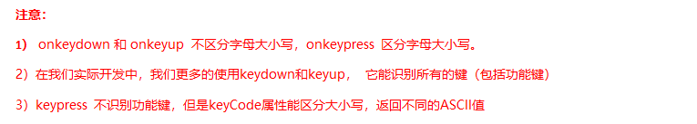
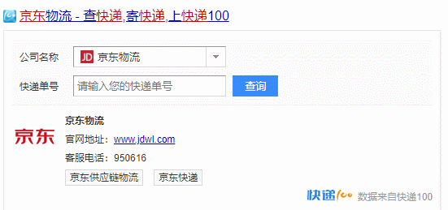
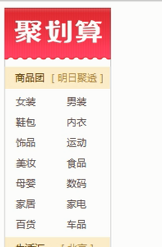
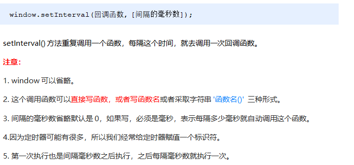
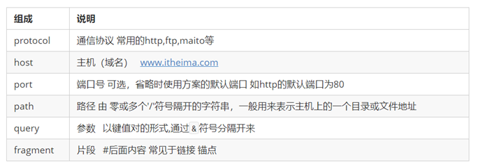
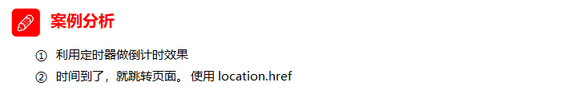
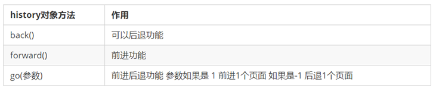

day04 - Web APIs
学习目标：
能够说出常用的3-5个键盘事件
能够知道如何获取当前键盘按下的是哪个键
能够知道浏览器的顶级对象window
能够使用window.onload事件
能够使用window.onresize事件
能够说出两种定时器的区别
能够使用location对象的href属性完成页面之间的跳转
能够使用location对象获取url中的参数部分
能够使用history提供的方法实现页面刷新
1.1. 常用的键盘事件 1.1.1 键盘事件
1 2 3 4 5 6 7 8 9 10 11 12 13 14 15 16 17 <script> document .addEventListener('keyup' , function ( console .log('我弹起了' ); }) document .addEventListener('keypress' , function ( console .log('我按下了press' ); }) document .addEventListener('keydown' , function ( console .log('我按下了down' ); }) </script>
1.1.2 键盘事件对象

使用keyCode属性判断用户按下哪个键
1 2 3 4 5 6 7 8 9 10 11 12 13 14 15 16 <script> document .addEventListener('keyup' , function (e ) console .log('up:' + e.keyCode); if (e.keyCode === 65 ) { alert('您按下的a键' ); } else { alert('您没有按下a键' ) } }) document .addEventListener('keypress' , function (e ) console .log('press:' + e.keyCode); }) </script>
1.1.3 案例：模拟京东按键输入内容 当我们按下 s 键， 光标就定位到搜索框（文本框获得焦点）。
注意：触发获得焦点事件，可以使用 元素对象.focus()
1 2 3 4 5 6 7 8 9 10 11 12 13 <input type="text" > <script> var search = document .querySelector('input' ); document .addEventListener('keyup' , function (e ) if (e.keyCode === 83 ) { search.focus(); } }) </script>
1.1.4 案例：模拟京东快递单号查询 要求：当我们在文本框中输入内容时，文本框上面自动显示大字号的内容。

1 2 3 4 5 6 7 8 9 10 11 12 13 14 15 16 17 18 19 20 21 22 23 24 25 26 27 28 29 30 31 32 33 <div class "search" > <div class "con" >123 </div> <input type="text" placeholder="请输入您的快递单号" class "jd" > </div> <script> var con = document .querySelector('.con' ); var jd_input = document .querySelector('.jd' ); jd_input.addEventListener('keyup' , function ( if (this .value == '' ) { con.style.display = 'none' ; } else { con.style.display = 'block' ; con.innerText = this .value; } }) jd_input.addEventListener('blur' , function ( con.style.display = 'none' ; }) jd_input.addEventListener('focus' , function ( if (this .value !== '' ) { con.style.display = 'block' ; } }) </script>
1.2. BOM 1.2.1. 什么是BOM BOM（Browser Object Model）即浏览器对象模型，它提供了独立于内容而与浏览器窗口进行交互的对象，其核心对象是 window。
BOM 由一系列相关的对象构成，并且每个对象都提供了很多方法与属性。
BOM 缺乏标准，JavaScript 语法的标准化组织是 ECMA，DOM 的标准化组织是 W3C，BOM 最初是Netscape 浏览器标准的一部分。
1.2.2. BOM的构成 BOM 比 DOM 更大，它包含 DOM。
1.2.3. 顶级对象window
1.2.4. window对象的常见事件 页面（窗口）加载事件（2种） 第1种
window.onload 是窗口 (页面）加载事件，当文档内容完全加载完成 会触发该事件(包括图像、脚本文件、CSS 文件等), 就调用的处理函数。
第2种
DOMContentLoaded 事件触发时，仅当DOM加载完成，不包括样式表，图片，flash等等。
IE9以上才支持！！！
如果页面的图片很多的话, 从用户访问到onload触发可能需要较长的时间, 交互效果就不能实现，必然影响用户的体验，此时用 DOMContentLoaded 事件比较合适。
1 2 3 4 5 6 7 8 9 10 11 12 13 14 <script> window .addEventListener('load' , function ( var btn = document .querySelector('button' ); btn.addEventListener('click' , function ( alert('点击我' ); }) }) window .addEventListener('load' , function ( alert(22 ); }) document .addEventListener('DOMContentLoaded' , function ( alert(33 ); }) </script>
调整窗口大小事件
window.onresize 是调整窗口大小加载事件, 当触发时就调用的处理函数。
注意：
只要窗口大小发生像素变化，就会触发这个事件。
我们经常利用这个事件完成响应式布局。 window.innerWidth 当前屏幕的宽度
1 2 3 4 5 6 7 8 9 10 11 12 13 14 15 16 17 <script> window .addEventListener('load' , function ( var div = document .querySelector('div' ); window .addEventListener('resize' , function ( console .log('变化了' ); if (window .innerWidth <= 800 ) { div.style.display = 'none' ; } else { div.style.display = 'block' ; } }) }) </script> <div></div>
1.2.5. 定时器（两种） window 对象给我们提供了 2 个非常好用的方法-定时器。
setTimeout()
setInterval()
setTimeout() 炸弹定时器 开启定时器
1 2 3 4 5 6 7 普通函数是按照代码顺序直接调用。 简单理解： 回调，就是回头调用的意思。上一件事干完，再回头再调用这个函数。 例如：定时器中的调用函数，事件处理函数，也是回调函数。 以前我们讲的 element.onclick = function(){} 或者 element.addEventListener(“click”, fn); 里面的 函数也是回调函数。
1 2 3 4 5 6 7 8 9 10 11 12 13 <script> setTimeout (function ( console .log('时间到了' ); }, 2000 ); function callback ( console .log('爆炸了' ); } var timer1 = setTimeout (callback, 3000 ); var timer2 = setTimeout (callback, 5000 ); </script>
案例：5秒后关闭广告 
1 2 3 4 5 6 7 8 9 10 11 <body> <img src="images/ad.jpg" alt="" class "ad" > <script> var ad = document .querySelector('.ad' ); setTimeout (function ( ad.style.display = 'none' ; }, 5000 ); </script> </body>
停止定时器
1 2 3 4 5 6 7 8 9 10 11 12 13 <button>点击停止定时器</button> <script> var btn = document .querySelector('button' ); var timer = setTimeout (function ( console .log('爆炸了' ); }, 5000 ); btn.addEventListener('click' , function ( clearTimeout (timer); }) </script>
setInterval() 闹钟定时器 开启定时器 
1 2 3 4 5 6 <script> setInterval (function ( console .log('继续输出' ); }, 1000 ); </script>
案例：倒计时
1 2 3 4 5 6 7 8 9 10 11 12 13 14 15 16 17 18 19 20 21 22 23 24 25 26 27 28 29 30 31 <div> <span class "hour" >1 </span> <span class "minute" >2 </span> <span class "second" >3 </span> </div> <script> var hour = document .querySelector('.hour' ); var minute = document .querySelector('.minute' ); var second = document .querySelector('.second' ); var inputTime = +new Date ('2019-5-1 18:00:00' ); countDown(); setInterval (countDown, 1000 ); function countDown ( var nowTime = +new Date (); var times = (inputTime - nowTime) / 1000 ; var h = parseInt (times / 60 / 60 % 24 ); h = h < 10 ? '0' + h : h; hour.innerHTML = h; var m = parseInt (times / 60 % 60 ); m = m < 10 ? '0' + m : m; minute.innerHTML = m; var s = parseInt (times % 60 ); s = s < 10 ? '0' + s : s; second.innerHTML = s; } </script>
停止定时器
案例：发送短信倒计时 点击按钮后，该按钮60秒之内不能再次点击，防止重复发送短信。
1 2 3 4 5 6 7 8 9 10 11 12 13 14 15 16 17 18 19 20 21 22 23 24 手机号码： <input type="number" > <button > 发送</button > <script> var btn = document .querySelector('button' ); var time = 3 ; btn.addEventListener('click' , function ( btn.disabled = true ; var timer = setInterval (function ( if (time == 0 ) { clearInterval (timer); btn.disabled = false ; btn.innerHTML = '发送' ; } else { btn.innerHTML = '还剩下' + time + '秒' ; time--; } }, 1000 ); }); </script>
1.2.6. this指向问题 this的指向在函数定义的时候是确定不了的，只有函数执行的时候才能确定this到底指向谁，一般情况下this的最终指向的是那个调用它的对象。
现阶段，我们先了解一下几个this指向
全局作用域或者普通函数中this指向全局对象window（注意定时器里面的this指向window）
方法调用中谁调用this指向谁
构造函数中this指向构造函数的实例
1 2 3 4 5 6 7 8 9 10 11 12 13 14 15 16 17 18 19 20 21 22 23 24 25 26 27 28 29 <button>点击</button> <script> console .log(this ); function fn ( console .log(this ); } window .fn(); window .setTimeout(function ( console .log(this ); }, 1000 ); var o = { sayHi: function ( console .log(this ); } } o.sayHi(); var btn = document .querySelector('button' ); btn.addEventListener('click' , function ( console .log(this ); }) function Fun ( console .log(this ); } var fun = new Fun(); </script>
1.2.7. location对象 什么是 location 对象
URL

location 对象的属性
案例：5分钟自动跳转页面

1 2 3 4 5 6 7 8 9 10 11 12 13 14 15 16 17 18 19 <button>点击</button> <div></div> <script> var btn = document .querySelector('button' ); var div = document .querySelector('div' ); btn.addEventListener('click' , function ( location.href = 'http://www.itcast.cn' ; }) var timer = 5 ; setInterval (function ( if (timer == 0 ) { location.href = 'http://www.itcast.cn' ; } else { div.innerHTML = '您将在' + timer + '秒钟之后跳转到首页' ; timer--; } }, 1000 ); </script>
案例：获取URL参数
1 2 3 4 5 6 7 8 9 10 11 12 13 <div></div> <script> console .log(location.search); var params = location.search.substr(1 ); console .log(params); var arr = params.split('=' ); console .log(arr); var div = document .querySelector('div' ); div.innerHTML = arr[1 ] + '欢迎您' ; </script>
location对象的常见方法
1 2 3 4 5 6 7 8 9 10 11 <button>点击</button> <script> var btn = document .querySelector('button' ); btn.addEventListener('click' , function ( location.reload(true ); }) </script>
1.2.8. navigator对象 navigator 对象包含有关浏览器的信息，它有很多属性，我们最常用的是 userAgent，该属性可以返回由客户机发送服务器的 user-agent 头部的值。
下面前端代码可以判断用户那个终端打开页面，实现跳转
1 2 3 4 5 if ((navigator.userAgent.match(/(phone|pad|pod|iPhone|iPod|ios|iPad|Android|Mobile|BlackBerry|IEMobile|MQQBrowser|JUC|Fennec|wOSBrowser|BrowserNG|WebOS|Symbian|Windows Phone)/i ))) { window .location.href = "" ; } else { window .location.href = "" ; }
1.2.9 history对象 window对象给我们提供了一个 history对象，与浏览器历史记录进行交互。该对象包含用户（在浏览器窗口中）访问过的URL。

history对象一般在实际开发中比较少用，但是会在一些 OA 办公系统中见到。
1.3. JS执行机制 以下代码执行的结果是什么？
1 2 3 4 5 6 7 console .log(1 );setTimeout (function ( console .log(3 ); }, 1000 ); console .log(2 );
以下代码执行的结果是什么？
1 2 3 4 5 6 7 console .log(1 );setTimeout (function ( console .log(3 ); }, 0 ); console .log(2 );
1.3.1 JS 是单线程
1 2 单线程就意味着，所有任务需要排队，前一个任务结束，才会执行后一个任务。如果前一个任务耗时很长，后一个任务就不得不一直等着。 这样所导致的问题是： 如果 JS 执行的时间过长，这样就会造成页面的渲染不连贯，导致页面渲染加载阻塞的感觉。
1.3.2 同步任务和异步任务 单线程导致的问题就是后面的任务等待前面任务完成，如果前面任务很耗时（比如读取网络数据），后面任务不得不一直等待！！
为了解决这个问题，利用多核 CPU 的计算能力，HTML5 提出 Web Worker 标准，允许 JavaScript 脚本创建多个线程，但是子线程完全受主线程控制。于是，JS 中出现了同步任务 和异步任务 。
同步 前一个任务结束后再执行后一个任务，程序的执行顺序与任务的排列顺序是一致的、同步的。比如做饭的同步做法：我们要烧水煮饭，等水开了（10分钟之后），再去切菜，炒菜。
异步 你在做一件事情时，因为这件事情会花费很长时间，在做这件事的同时，你还可以去处理其他事情。比如做饭的异步做法，我们在烧水的同时，利用这10分钟，去切菜，炒菜。
1 2 3 4 5 6 JS中所有任务可以分成两种，一种是同步任务（synchronous），另一种是异步任务（asynchronous）。 同步任务指的是： 在主线程上排队执行的任务，只有前一个任务执行完毕，才能执行后一个任务； 异步任务指的是： 不进入主线程、而进入”任务队列”的任务，当主线程中的任务运行完了，才会从”任务队列”取出异步任务放入主线程执行。
1.3.3 JS执行机制（事件循环）
1.3.4 代码思考题 1 2 3 4 5 6 7 8 9 console .log(1 );document .onclick = function ( console .log('click' ); } setTimeout (function ( console .log(3 ) }, 3000 ) console .log(2 );